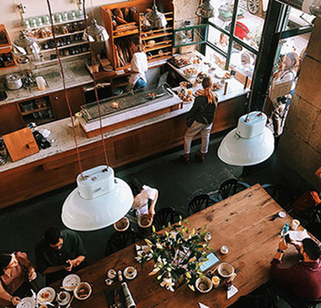

ABOUT CRUMB.
街とつながる、焼きたてのぬくもり。

CRUMB.は、目黒の小さな通りに佇むベーカリー。
毎朝、店内で粉から仕込み、丁寧に焼き上げたパンを並べています。特別な材料ではなく、シンプルで安心できる素材を選び、ひとつひとつの工程に時間をかけて仕上げる。それが、私たちのこだわりです。
あなたの毎日に、ひと口の幸せを。
CRUMB.でお待ちしています。
OUR SIGNATURE
私たちのスペシャリティー
Sourdough
外はパリッと、中はもっちり。
小麦本来の旨みをじっくり引き出した、CRUMB.自慢のサワドーブレッド。自家製の天然酵母でゆっくり発酵させた生地は、ほどよい酸味と香ばしさがクセになる味わい。
Bagel
ぎゅっと詰まったもっちり食感。
CRUMB.のベーグルは、一口で“いつもの朝”がちょっと特別になるように、時間をかけて丁寧に仕上げています。北海道産小麦と天然酵母を使用し、低温長時間発酵によって生まれる深い風味としっかりとした食感が特長。
Baguette
外はパリッと香ばしく、中はもっちりとしたクラム。
CRUMB.のバゲットは、シンプルだからこそごまかしのきかない、職人の技術とこだわりが詰まった一本です。
国産小麦と天然酵母を使い、低温でじっくりと発酵。噛むほどに広がる小麦本来の風味と、毎日食べても飽きない軽やかな口あたりが特長です。
ACCESS
アクセス
CRUMB. bakery
所在地: 東京都目黒区目黒1-5-15 MM15ビル4・5F
営業時間(平日のみ) 8:00～17:00
最寄駅 目黒駅 （ＪＲ最寄駅 目黒駅 山手線、東京メトロ南北線、都営三田線）
お知らせ
- 2025/05/24 季節限定ベーグル「レモン＆クリームチーズ」発売中！
- 初夏の訪れにぴったりの新フレーバーが登場しました。 爽やかな瀬戸内レモンピールと、なめらかなクリームチーズをたっぷり包んだ、季節限定のベーグルです。ほんのり甘くて、でも重たすぎない、朝にも午後のティータイムにもぴったりな仕上がり。 販売期間は【5月25日（土）〜6月30日（日）】まで。 店頭のみの販売となりますので、お散歩がてらぜひお立ち寄りください。 CRUMB.のベーグルで、ちょっと特別な一日を。
- 2025/03/13 モーニングセット、はじめました。
-
朝の目黒に、焼きたての香りと温かいコーヒーを。
CRUMB.では、平日限定で「モーニングセット」の提供をスタートしました。
お好きなベーグルに、日替わりのスプレッドとドリンクが付いたお得なセットで、1日をちょっと心地よく始めませんか？
🕗 提供時間：平日 8:00〜11:00 📍 店内飲食のみ／数量限定
仕事前のひとときに、自分だけのベーカリー時間をどうぞ。